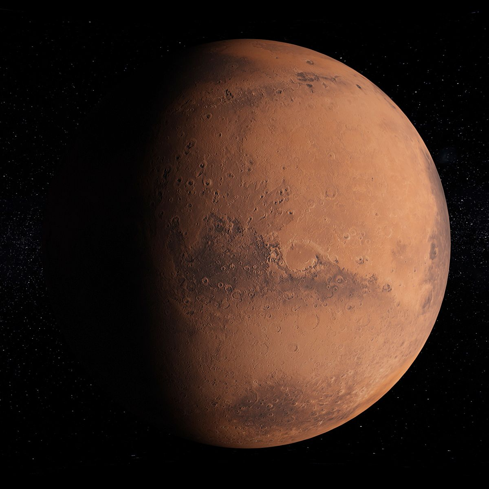

Mars je čtvrtá planeta od Slunce a často je nazýván „Rudá planeta“ kvůli své načervenalé barvě způsobené oxidem železa na povrchu.
Povrch Marsu je kamenitý a pokrytý prachem. Nachází se zde největší sopka ve Sluneční soustavě Olympus Mons a obrovské kaňony Valles Marineris.
Atmosféra Marsu je velmi tenká a tvořená hlavně oxidem uhličitým. Kvůli nízkému tlaku a chladnému klimatu zde nemůže existovat kapalná voda na povrchu.
Mars má dva malé měsíce – Phobos a Deimos. Na planetě byly nalezeny známky dávné vody a vědci zde hledají možné stopy života.

Průměrná teplota na Marsu je kolem −60 °C. V zimě mohou teploty klesnout až pod −120 °C.
Mars je jednou z nejvíce zkoumaných planet. Pohybují se zde robotická vozítka NASA, například Perseverance nebo Curiosity.